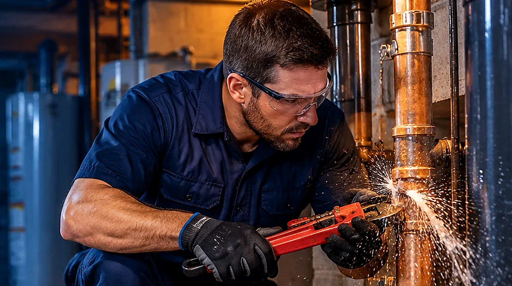

Burst Pipe Repair
Fast next-step guidance when a pipe bursts in Buffalo Grove, IL. We help connect homeowners with independent local plumbing professionals.
Read service guide →Explore information for common plumbing problems and prepare to speak with an independent local professional.

Fast next-step guidance when a pipe bursts in Buffalo Grove, IL. We help connect homeowners with independent local plumbing professionals.
Read service guide →
Learn what to do when pipes freeze and how local plumbing professionals can help reduce the risk of a split pipe.
Read service guide →
Guidance for identifying visible pipe leaks and finding an appropriate local plumbing professional in Buffalo Grove and nearby suburbs.
Read service guide →
Understand common signs of a possible slab leak and the questions to ask before arranging a professional inspection.
Read service guide →
Find guidance for urgent plumbing problems and learn how to contact a local independent plumbing professional.
Read service guide →
Compare common reasons pipes may need repair or replacement and prepare for a professional assessment.
Read service guide →
Learn when shutting off the main water supply may help limit damage and what to do next.
Read service guide →
Understand practical first steps after a plumbing leak and when cleanup or restoration specialists may be needed.
Read service guide →Share the type of issue and your area. Ask about provider availability, credentials, and pricing before authorizing work.